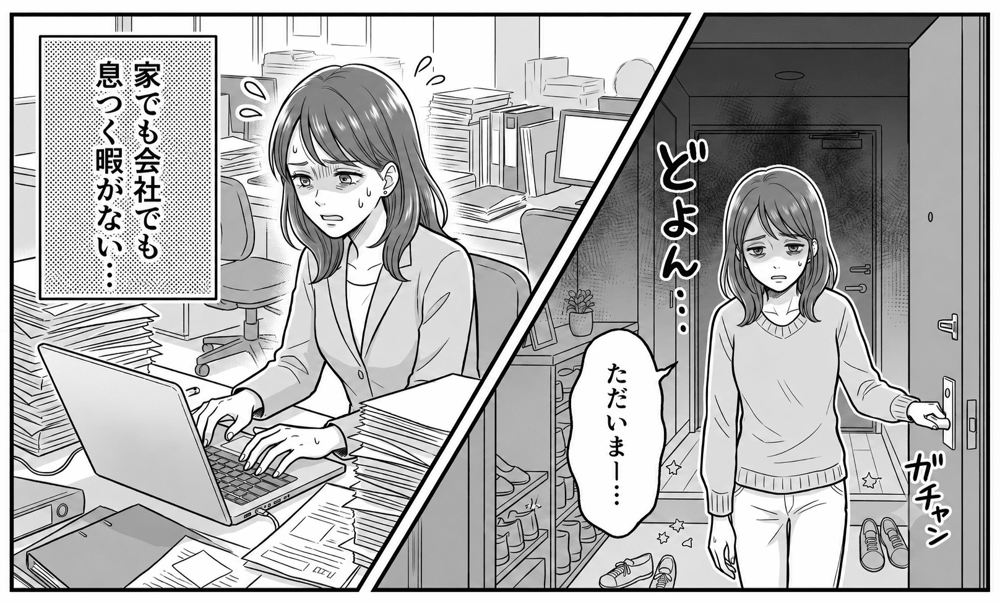

以前は朝から探し物で怒ってばかりでした。
サポートを受けてからは、子どもが自分で準備や片付けができる状態になり、イライラが激減！心に余裕が生まれました。
「私がいなきゃ家が回らない」とストレスを抱えていました。
夫に毎回指示しなくても共有できる仕組みを作ってもらえたのが一番の収穫です。
片付けてもすぐ散らかる堂々巡りから抜け出せました！
「自分だけが管理する家」ではなく、家族全員が使いやすい動線になったことで、毎日が快適です。
| 会社名 | 株式会社オキ |
|---|---|
| 所在地 | 〒100-0005 東京都千代田区丸の内1-1-1 オキビル 10F |
| 事業内容 | Web制作 マーケティング事業 |
※本ページはポートフォリオ用のLPたたき台（架空情報を含む）です。